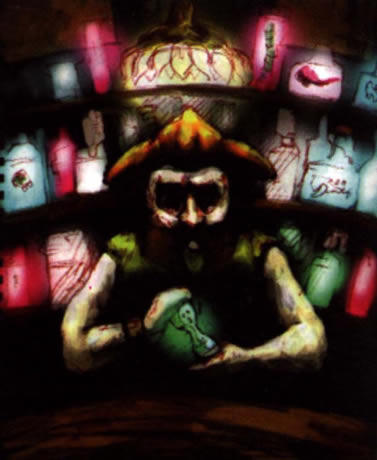
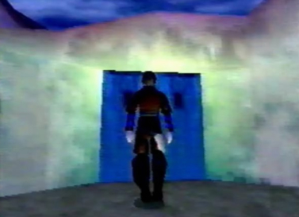
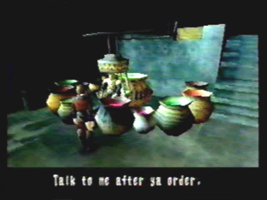
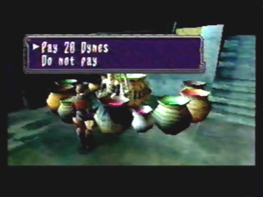
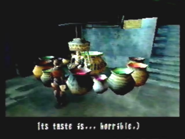
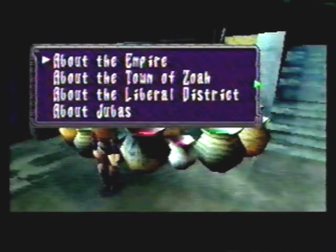
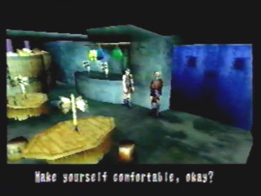
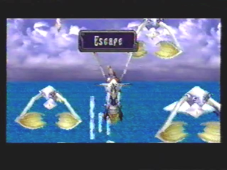
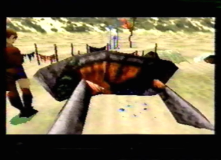

Introduction
|  |
| Who is Juba? Juba owns his own bar, in the Village of Zoah, a village you get to go to in Panzer Dragoon Saga. In the game, you can go into his bar at night and order many unusual drinks. These drinks aren't just any ordinary drinks, they are made from the fluids of monsters and can have many different, usually bad, side effects, once ingested. Juba knows a great deal of knowledge regarding the Panzer Dragoon world. He won't talk to you unless you order a drink. Once you order, Juba will give you information on certain topics in the Panzer Dragoon world. This section is similar to Zork, in that you are given choices and the choices you make, determine the outcome. |
|  In Panzer Dragoon Saga, in the Village of Zoah, you can go visit Juba's bar at night. |
 He won't talk to you unless you order one of his illuminated drinks. |
|
 His drinks cost 20 Dynes, you will have to pay up. |
 Juba's drinks arn't too pleasant on the tastebuds. It takes a real man to down these horrible drinks. |
|
 Once you've finished your drink, Juba will tell you anything you want to know, from a list of topics regarding the Panzer Dragoon world. |
| Things you Should Know Before Entering Juba's Bar
Questions 1. Who is Jael? 2. What is a Macran Jewel? 3. What are Dynes?
Answers 1. Jael is a waitress who works in Juba's bar. 2. Macran Jewels are produced inside several types of monsters and are very valuable. 3. Dynes are Panzer Dragoon Saga's form of money. They are small stones harvested from the insides of monsters.
|
|  Jael is a waitress at Juba's bar, her purpose is to make you feel more comfortable. |
 Creatures called Kolbas, have Macran Jewels inside their bodies. These jewels are very valuable. |
|  Dynes, the form of currency in PDS, are shinny stones found inside monsters. |